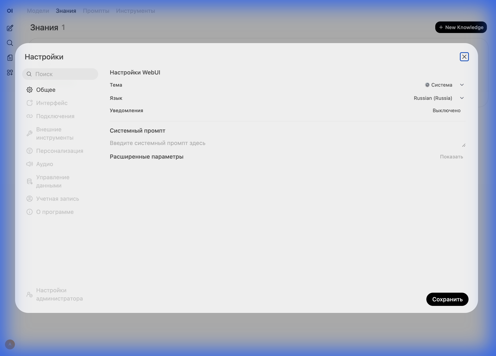

Продвинутые возможности
Раскройте полный потенциал AI с помощью инструментов, памяти и голосового управления.
1. Временные чаты
Нужно быстро спросить что-то и забыть? Используйте Временный чат.
Нажмите на иконку "Огонь" 🔥 или выберите "Временный чат" в меню. История этого диалога не сохранится.
2. Как AI "думает" (Thinking Tokens)
В ERNI-KI v12.1 мы внедрили технологию Context7. Это позволяет модели "подумать" перед ответом.
Чтобы активировать режим, начните промпт с команды /think. Вы увидите скрытый блок мыслей, где AI рассуждает, строит план и критикует сам себя перед финальным ответом.
3. Инструменты (MCP)
Model Context Protocol (MCP) — это руки для AI. Модель может не только писать текст, но и выполнять действия.
🕰️ Time & Date
Запрос: "Сколько дней осталось до Нового Года?"
Как работает: AI вызывает инструмент get_current_time, получает точную дату и считает разницу.
🧠 Memory (Память)
Запрос: "Запомни, что проект Alpha заморожен."
Как работает: AI сохраняет этот факт в долгосрочную память. Через месяц вы спросите "Что с Alpha?", и он ответит верно.
4. Настройки
Вы можете персонализировать интерфейс под себя: изменить тему, язык или параметры генерации.
- Тема: Светлая или темная.
- Язык: Интерфейс переведен на множество языков.
- Системный промпт: Задайте поведение AI по умолчанию (например, "Всегда отвечай кратко").